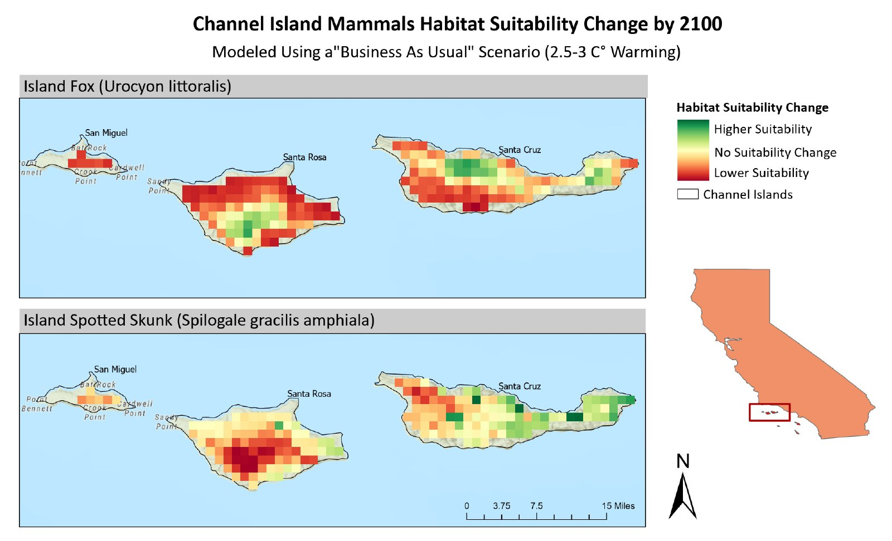
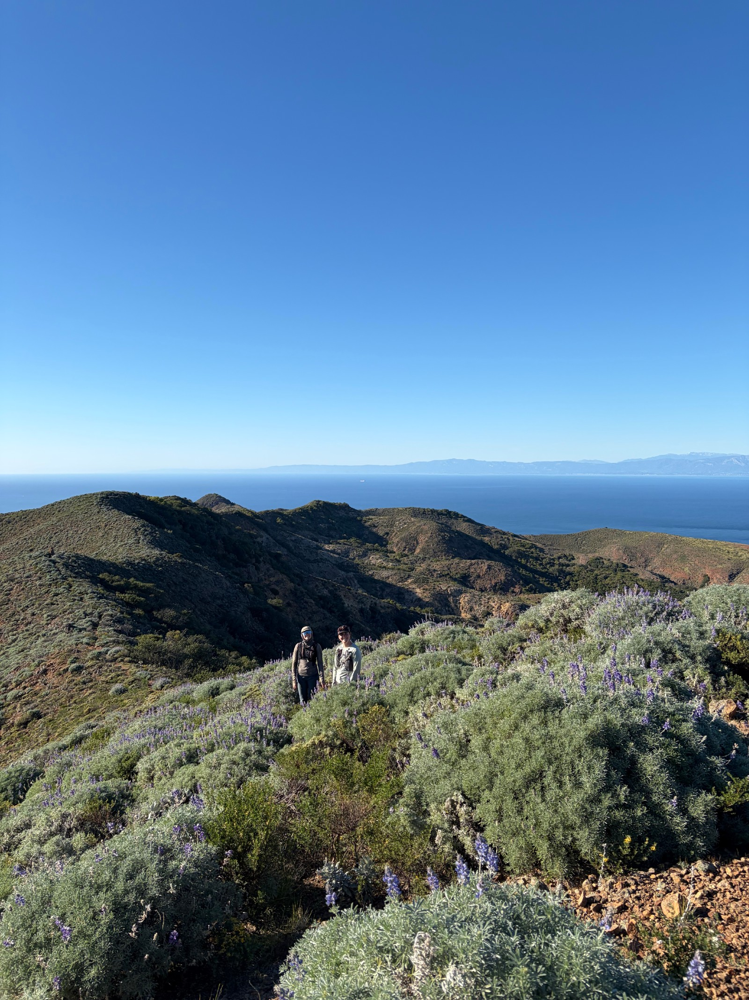

Climate-driven habitat analysis for two endemic Channel Islands mammals.

Current MaxEnt-predicted habitat suitability and geographic overlap for Island Fox and Island Spotted Skunk.
Climate-driven range analysis of Channel Islands mammals.
For this project, I modeled present and future habitat suitability for the Island Fox (Urocyon littoralis) and Island Spotted Skunk (Spilogale gracilis amphiala) across the Channel Islands. These isolated ecosystems are have a high percentage of endemic species and shaped by varied terrain, a Mediterranean climate, and increasing environmental change.
Using MaxEnt, I mapped current habitat suitability and projected how it may change under a business-as-usual warming scenario of 2.5–3°C by 2070 and 2100. I also evaluated the short-term effects of the May 2026 Santa Rosa Island Fire by comparing pre- and post-fire NDVI ( Normalized Difference Vegetation Index) in the models.
The analysis showed that the two species may respond differently to future conditions despite overlapping geographic ranges. It also suggested that the short-term vegetation loss from the fire had less influence on predicted suitability than the broader climate, land-cover, vegetation-structure, and topographic conditions included in the model.




Spatial work grounded in place.
Collecting and interpreting observations with attention to local ecology, terrain, and the practical realities behind a dataset.
Using GIS, remote sensing, and spatial modeling to turn complex environmental patterns into defensible findings.
Designing maps and visuals that make research legible to collaborators, decision-makers, and broader audiences.